수집 기사
Automated Reasoning policy refinement in Amazon Bedrock
원문 보기 · RepoAWS Weekly Roundup: Price reduction of GPT models in Bedrock, CloudWatch managed collectors for Prometheus metrics, and more (August 3, 2026)
원문 보기 · Repo“같은 트래픽, CPU는 86% 덜 쓴다” — 100만 사이트 플랫폼 아임웹의 Valkey 9.1 실측 결과
원문 보기 · Repo분산 학습을 위한 AWS 컴퓨트 선택 가이드 (2편: 초대규모 스케일링과 인스턴스 확보)
원문 보기 · Repo원문 참조
| 기사 | 게시 | 카테고리 |
|---|---|---|
| From weeks to minutes: How Formula 1® uses agentic AI on AWS to accelerate data operations | 2026-08-04 | AI/ML |
| Automated Reasoning policy refinement in Amazon Bedrock | 2026-08-04 | AI/ML |
| AWS Weekly Roundup: Price reduction of GPT models in Bedrock, CloudWatch managed collectors for Prometheus metrics, and more (August 3, 2026) | 2026-08-04 | AI/ML |
| “같은 트래픽, CPU는 86% 덜 쓴다” — 100만 사이트 플랫폼 아임웹의 Valkey 9.1 실측 결과 | 2026-08-03 | Data/Analytics |
| 분산 학습을 위한 AWS 컴퓨트 선택 가이드 (2편: 초대규모 스케일링과 인스턴스 확보) | 2026-08-03 | AI/ML |
시사점
이번 수집은 Bedrock Automated Reasoning, agentic AI 데이터 운영, GPT 모델 가격/운영 업데이트, Valkey 성능 개선, 대규모 분산 학습 컴퓨트 선택을 함께 보여줍니다. 기업 고객 관점에서는 AI 에이전트 운영 신뢰성, 캐시/인프라 비용 효율, 대규모 학습 자원 확보 전략을 동시에 점검할 필요가 있습니다.